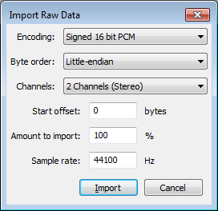

File Menu
From Audacity Manual
New CTRL + N
Creates a new and empty project window to start working on new or imported Tracks. This new work environment can then be saved as an Audacity Project File (.AUP) for easy and full retrieval of its contents via the Save Project or Save Project As... File menu functions.
Open... CTRL + O
Launches a file selection window where you can:
- Open one or more Audacity Project files (.aup) or
- Import one or more audio files or lists of files (.LOF).
If an empty project window exists, that window will be used for the first project or imported file. Any subsequent opened projects or audio files will create new project windows.
If instead you want to add the content of an audio file into a project that already contains one or more audio tracks (for example, to mix two audio files together), use instead.
For audio files, the importer used depends on the currently selected file type in File > Open or File > Import > Audio... and on settings in Extended Import Preferences.
See Importing Audio for more information.
Recent Files ("Open Recent" on Mac)
Lists the full path to the twelve most recently opened projects or recently imported audio files. The oldest item at the bottom is removed when a new item is added to the top. When you delete an Audacity project or audio file it will remain in the list, but will be removed from the list if you select it.
- To clear the entire list, choose "Clear" underneath the last item in the list.
- To manually remove an individual item from the list, exit Audacity, open audacity.cfg in a text editor and delete the unwanted item below the [Recent Files] line. Take care not to delete the [Recent Files] line itself.
Close CTRL + W
Closes the current project window, prompting you to save your work if you haven't saved.
Save Project CTRL + S
Saves the current Audacity Project in uncompressed, lossless quality using the AU container format. An AUP project file is created, along with a folder with the same name as the AUP file that contains the project's audio data. For example, if you save a project as chanson.aup, a folder called chanson_data will contain the audio data.
If you import uncompressed files such as WAV and AIFF into your project with Import / Export Preferences set to "Read uncompressed audio files directly from the original (faster)", you will create a dependency on those files remaining accessible. In this case, a Dependencies Dialog may appear when saving the project. Follow the instructions in the dialog to either "Copy All Audio..." (so removing all dependencies), or to copy in selected files or none at all. If you choose to not copy in any files, you must not move, rename or delete those files, or the folder they are in. The dialog also lets you choose future behavior when saving a project that depends on imported files.
Save Project As...
Same as "Save Project" above, but allows you to save a copy of an open project to a different name or location. This can be useful if you want to preserve a snapshot of the state of a project at a particular time, then proceed to make further changes to the project you just saved.
Save Compressed Copy of Project...
Saves a copy of your project in the compressed Ogg Vorbis format, each track being saved as a separate OGG file. When you quit Audacity you may still be prompted about saving changes. Saving changes would save a separate, standard uncompressed project as above, so if you don't want that you can quit Audacity without saving.
The resulting _data folder for the project is about eight times smaller than that created using either "Save Project" command, so this may be useful for sending projects to others. There will be some resulting loss of quality. Note that the quality loss will be increased each time a compressed project is resaved as a compressed project (for example, if you send a compressed project to someone else, and they then edit it and send it back to you as a compressed project).
Most project data will be retained, including labels, gain and pan settings, track positions on the timeline, track order and metadata. Clips will not be retained - spaces between clips will be converted to silence. Volume envelopes present when saving will be rendered, but the actual envelope points will be lost.
Opening a compressed project will be slower than opening a standard project, because the OGG files in the _data folder will be decompressed into Audacity's AU file format in order to work with the data. The AU files will be in a separate folder inside the _data folder. The OGG files will remain in the _data folder after opening the project, but they can be deleted to save disk space. Similarly when sending a saved compressed project to someone, you can delete any folders containing AU files that are inside the _data folder, because all the necessary data is in the AUP file and the OGG file(s).
Check Dependencies...
Lists any WAV or AIFF audio files that your project depends on, and allows you to copy these files into the project.
Edit Metadata...
Use this function to edit the metadata tags that will be applied to exported files.
Import
Audio... CTRL +SHIFT + I
Launches a file selection window where you can choose to import one or more audio files into the current Audacity project. The file(s) will always be added as a new track to the project. This lets you mix two or more files together.
See Importing Audio for more information.
Labels...
Launches a file selection window where you can choose to import a single text file into the project containing point or region labels. For more information about the syntax for labels files, see Importing and Exporting Labels.
MIDI...
Imports a MIDI (MIDI or MID extension) or Allegro (GRO) file to a Note Track where simple cut-and-paste edits can be performed. The result can be exported with the command. Note: Currently, MIDI and Allegro files cannot be played.
Raw Data...
- 
Attempts to import an uncompressed audio file that might be "raw" data without any headers to define its format, might have incorrect headers or be otherwise partially corrupted, or might be in a format that Audacity is unable to recognize. Raw data in textual format cannot be imported.
First, select the file in question in the "Select any uncompressed audio file" dialog. Then select appropriate parameters to assist Audacity in the formatting of the data. The fields in the dialog require you select:
- Encoding (PCM, ADPCM, float...)
- Byte order (this is almost always Little-endian if the file was created on Windows)
- Number of channels (expected to be found in the file and created as a result)
- Start offset in bytes
- Percentage amount of the file to import
- Sample rate to be applied to the import (currently, only rates between 100 Hz and 100000 Hz are supported)
Export Audio... CTRL + SHIFT + E
Exports the current Audacity project as an audio file format that can be read by other programs. If there are multiple tracks in your project, they will be automatically mixed in the exported data. For more information about mixing, see Mix and Render on the Tracks Menu.
You can choose the exported file format and settings from the Export Audio Dialog.
| For all types of audio export including Export Selected Audio and Export Multiple, tracks that are muted are not exported. |
Export Selected Audio...
This is the same as Export Audio above, but it only exports the part of the project that is selected. For example, to save a small piece of a long track as a separate file, just select that audio as described in How do I select audio in one track? before using Export Selected Audio.
Export Labels...
If you have any Label Tracks, this command will export all their labels as a text file. The text in each label appears as one line in the exported file, prefaced by the start time and end time of the label (in seconds). If you have multiple label tracks, the labels in the uppermost label track appear first in the file.
To import the labels into an Audacity project later, use the Import... command, above.
Export Labels is commonly used in speech transcription or speech recognition research, after which the files can be manipulated in any program that accepts text files. Labels can also be modified after export for use as Cue Sheets for CD burning or as movie subtitles.
Export Multiple... CTRL + SHIFT + L
This allows you to do multiple exports from Audacity with one command. Export either multiple files based on the multiple tracks in the project, or based on the labels in a single audio track. A great timesaver for splitting up long recordings into separate CD tracks, or archiving multiple working tracks. See the Tutorial - Copying tapes, LPs or MiniDiscs to CD for an example of how this is used.
Export MIDI...
Export the currently selected Note Track as a MIDI or Allegro file (which is like a MIDI file except that the notes information is stored as plain text). You can choose in the Import / Export Preferences whether to export Allegro files with times and durations represented in seconds (default) or in beats. Some programs that can play MIDI files may not be able to play Allegro files.
Only one Note Track can be exported at a time. The entire Note Track will be exported regardless of any selection made in the track. If the Note Track has been time shifted to start at a point other than zero, empty MIDI bars will be added at the start.
| To export an Allegro file the .gro file extension must be manually added to the end of the exported file name, except on Windows Vista, Windows 7 and Windows 8. |
Apply Chain...
A Chain is a sequence of automated commands similar to a "macro". It is often used to batch process a group of audio files, or to automate the application of a set of effects to a project, with the same sequence of effects or functions. Apply Chain lets you select a chain previously created in Edit Chains below, then apply it to either the current project or to a group of specially selected audio files.
Edit Chains...
Allows you to either edit, remove or rename existing Chains, or add a new Chain. The Chain can include a number of common Audacity functions and effects to be executed in any order you specify. In many cases, the parameters for each command in the Chain can be specified within the Edit Chains window.
Page Setup...
Opens the standard Page Setup dialog box prior to printing.
Print...
Prints all the waveforms in the current project window (and the contents of Label Tracks or other tracks), with the Timeline above. Everything is printed to one page.
Exit CTRL + Q
Closes all project windows and exits Audacity. If there are any unsaved changes to your project, Audacity will ask if you want to save them. Note that it isn't necessary for you to save changes if you've already exported your mix as a WAV or MP3 and you are now happy with it. But if you are working on a mix and plan to continue later where you left off, saving an Audacity Project will let you restore everything, exactly as you left it.